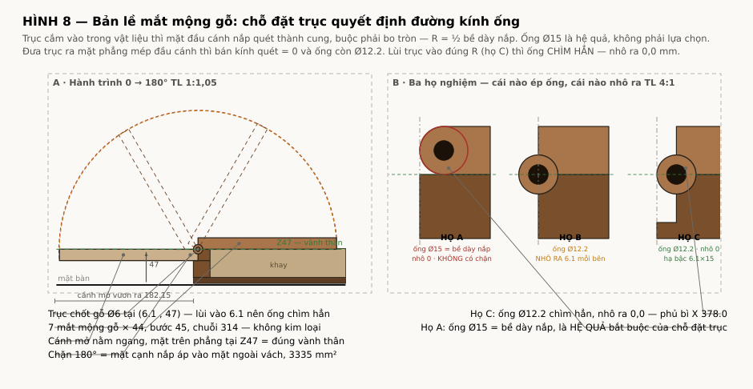

Giải quyết: review Rev B §2.5 — HD-01 ghi “góc mở 180°” nhưng không định nghĩa cao độ trục xoay Công cụ: tools/hinge_kinematics.py · tools/draw_hinge.py — chạy lại được · Đơn vị: mm Hệ toạ độ: Z = 0 mặt bàn · X = 0 mặt ngoài vách trái
Trục xoay P = (9 , 58). Suy ra từ ràng buộc, không phải chọn.
Ống gỗ bán kính 9 phải tiếp tuyến cả mặt trên (Z67) lẫn mặt dưới (Z49) của nắp — điều đó ép tâm ống
vào đúng một điểm. Không còn bậc tự do nào. Cánh mở ra nằm ngang đúng cao độ vành thân,
vươn ra 159 mm, dốc 1,94° về phía người chơi.
Nhưng kéo theo một thay đổi bắt buộc: vách bản lề phải dày 18 chứ không phải 10 —
hộp buộc phải rộng ra.
1. Suy ra trục xoay
#
Ràng buộc
R1
Chốt phải nằm trong gỗ cả cánh nắp lẫn thân — không được lộ ra ngoài
Ống gỗ phải tiếp tuyến cả mặt trên (Z67) lẫn mặt dưới (Z49) của nắp
R4
Khi mở 180°, sống khóa (nổi 16) chúc xuống — không được chạm mặt bàn
R5
Trong hành trình 0–180°, cánh không được va vào thân hộp
R2 + R3 ⇒ tâm ống ở giữa bề dày nắp: Pz = 49 + 9 = 58, và cách mặt ngoài thân
đúng một bán kính: Px = 9. Hết bậc tự do — đây là nghiệm duy nhất.

2. Cánh mở ra nằm ở đâu
Điểm
Đóng X
Đóng Z
Mở 180° X
Z
Mép mộng, mặt trên
18,0
67,0
0,0
49,0
Mép mộng, mặt dưới
18,0
49,0
0,0
67,0
Mép khe giữa, mặt trên
176,7
67,0
−158,7
49,0
Mép khe giữa, mặt dưới
176,7
55,0
−158,7
61,0
Đáy sống khóa
154,7
83,0
−136,7
33,0
Cánh mở ra nằm ngang, mặt dưới phẳng tại Z49 — đúng bằng cao độ vành thân, nên
hai cánh trông như hai cánh chim xoè ra từ mép trên hộp. Vươn ra 158,7 mm.
Mặt trên dốc từ Z67 (sát hộp) xuống Z61 (đầu ngoài) = 1,94° nghiêng về phía người chơi —
đúng thứ cần cho khay bỏ bài, và có được miễn phí từ chính cái vát nắp 18→12.
3. Sống khóa chứng minh cánh không thể nằm xuống bàn
Khi mở hết, sống khóa chúc xuống tới Z33 — hở mặt bàn 33 mm, đạt. Nhưng nếu hạ trục xoay
để cánh nằm hẳn xuống bàn (cần Pz = 33,5), sống khóa sẽ đâm xuống dưới mặt bàn 16 mm.
Nói cách khác: chính chi tiết sống khóa loại bỏ toàn bộ họ nghiệm “cánh nằm phẳng
trên bàn”. Đây không phải lựa chọn thẩm mỹ mà là hệ quả hình học. Trục cao là bắt buộc.
4. Quét 0–180° — không va chạm
Quét 1° một bước, 11 điểm biên trên cánh cộng đáy sống khóa, kiểm va chạm với vách thân, đáy hộp,
khay và mặt bàn: không va chạm ở bất kỳ góc nào. Khoảng cách nhỏ nhất tới mặt bàn là 33 mm,
tại đáy sống khóa khi mở hết.
5. Vấn đề mới phát hiện: không có mặt chặn 180° tự nhiên
Ở 180° không có bề mặt nào của cánh gặp bề mặt nào của thân. Khớp chốt không
chịu được mô men quanh chính trục nó, nên cánh sẽ quay tiếp và rớt xuống nếu không có chặn.
HD-01 ghi “mặt chặn gỗ, hở 0,4” nhưng chưa nói chặn ở đâu — và ở hình học này thì không có chỗ nào
để chặn từ bên ngoài mà không lộ chi tiết.
Giải: phay một mặt phẳng trên ống gỗ của cả hai bên — chặn nằm trong lòng mộng,
hoàn toàn khuất. Khi mở hết, hai mặt phẳng áp vào nhau.
Trường hợp tải
Mô men
Lực chặn
Ứng suất
Chỉ trọng lượng cánh (0,83 kg)
0,72 N·m
120 N
0,11 MPa
+ 2 kg quân bỏ trên khay
2,45 N·m
409 N
0,39 MPa
+ người chơi tỳ 5 kg ở mép ngoài
8,94 N·m
1491 N
1,41 MPa
Mặt chặn rộng 8 × dài 44 × 3 mắt mộng = 1056 mm², bán kính 6 từ tâm chốt.
Nén ngang thớ cocobolo ~14 MPa → hệ số an toàn 10× ngay cả khi có người tỳ lên.
6. Độ võng đầu cánh khi mở
Khe chốt 0,20–0,25 mm đường kính trong ống dài 44 → góc rơ 5,68 mrad → võng 0,95 mm ở mút
168 mm. Sụt mặt chặn dưới tải 5 kg chỉ 0,004 mm, bỏ qua.
Đặc tính kiểm mới: võng đầu cánh mở ≤ 1,5 mm dưới tải 5 kg tại mép ngoài.
Muốn chặt hơn thì siết khe chốt, không phải tăng tiết diện — toàn bộ độ rơ nằm ở khe chốt.
7. Hệ quả bắt buộc: vách bản lề 10 → 18
Ống gỗ bán kính 9 nghĩa là mắt mộng bên thân cũng phải dày 18. Vách hiện tại 10 mm:
lỗ Ø6,2 chỉ còn 1,9 mm thành mỗi bên. Không dùng được. Chuỗi X buộc phải đổi:
Vách
Khay
Ngăn
Phụ kiện
TỔNG
Ghi chú
10
126
6
70
354
hiện tại — không dùng được
18
126
6
70
370
khuyến nghị — không động tới bố trí lòng hộp đã chốt
18
126
4
70
366
vách ngăn mỏng còn 4 mm
18
126
6
62
362
AC-01 còn 60 ngoài / 50 lòng — phải bố trí lại ổ xúc xắc và hốc quân dự phòng
Khuyến nghị 370 × 350. Không đụng tới bố trí lòng hộp đã chốt, và 370 × 350 gần
vuông — tỷ lệ nhìn còn đẹp hơn 354 × 350. Kéo theo: cánh nắp 184,2 mỗi bên, khe ráp giữa vẫn ở
X = 185, sống khóa X 163…207.
8. Khối lượng — lần thứ ba đi lên
Mốc
Khối lượng
Tải thiết kế
Bản đầu (ước, thiếu sống khóa)
7,30 kg
215 N
Chốt khung cocobolo + tính cả sống khóa
7,92 kg
233 N
Vách bản lề 18, hộp 370
8,22 kg
242 N
8,2 kg. Kiểm lại toàn bộ ở 242 N: sống uốn 12,3 MPa (hệ số 9×), võng 0,96 mm
trên giới hạn 1,14, chốt xoay 0,95 MPa, chỉ khâu quai hệ số 3,0×. Vẫn đạt hết — không phải sửa
kích thước nào.
Nhưng đây là lần thứ ba khối lượng đi lên, và mỗi lần đều vì một quyết định đúng về kỹ thuật.
Ở 8,2 kg, xách một tay là việc làm được trong 1–2 phút chứ không hơn. Nếu bộ này để bày và chơi
tại chỗ thì không sao; nếu thật sự phải mang đi thì khay lõi ổn định (−0,77 kg) và phương án C
(hốc âm hai tay) là hai đòn bẩy duy nhất còn lại.
9. Chốt trị số cho HD-01
Hạng mục
Trị số
Trục xoay
X = 9 từ mặt ngoài vách, Z = 58 từ mặt bàn
Bán kính ống gỗ
R9, tiếp tuyến mặt trên và mặt dưới nắp
Dày vách bản lề
18 (từ 10) — thành quanh lỗ 5,9 mm
Lỗ chốt
Ø6,20 +0,05/0 · chốt Ø6,00 −0,05 (khe 0,20–0,25)
Mặt chặn 180°
phay phẳng rộng 8, bán kính 6, trên cả hai bên, khuất trong mộng
Góc mở
180° +0/−2°, chặn bằng mặt phẳng trong mộng
Vị trí cánh khi mở
nằm ngang, mặt dưới Z49 (= vành thân), vươn ra 159